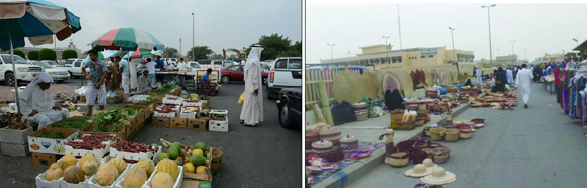
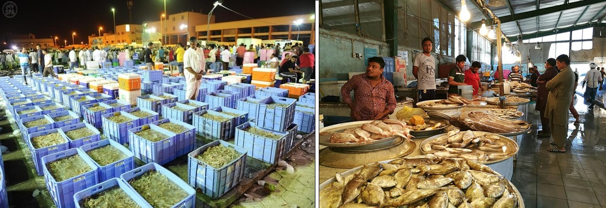
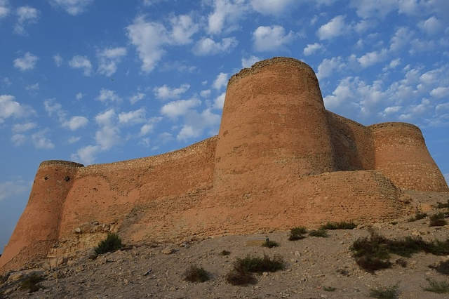

Famous Landmarks
Khamees Market
Every Thursday morning, Qatif bustles with the transactions of Khamees market, where stands are placed among regular stores and peddlers roam. A wide range of goods is available, from clothes, to tech, to pottery with folkloric handicrafts, made during the week, displayed side-by-side modern imports. The market is distinguished by its decent prices and its variety of items for sale.
Fish Market
The largest fish market where fishermen, traders, foreign workers and normal customers buy and sell tons of fishes, shrimps, and others with huge profits. The market opens every day.
Tarout Castle
Just east of the central area of Qatif is Tarout, a small island containing a number of fascinating historical sights. Chief among them is beautiful Tarout Castle, which dates back to the 16th century. Interestingly, no one is sure whether it was built by locals to defend themselves from Portuguese attacks, or whether it was the Portuguese who built it to defend themselves from Turkish attacks.